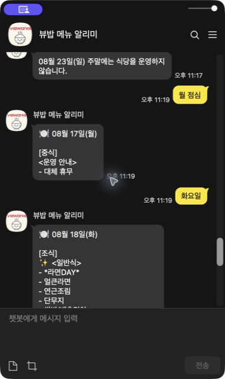

📱 지금 바로 사용해 보세요

QR 촬영 → 채널 추가 → 원하는 끼니 클릭
입력하지 않아도 답변 아래 버튼에서 바로 고를 수 있어요.
오늘의 아침
오늘의 점심
오늘의 저녁
카톡 버튼 한 번이면 끝!
그룹웨어 식단표를 찾고 확대할 필요 없이
오늘의 아침·점심·저녁 버튼만 눌러보세요.
QR 촬영 → 채널 추가 → 원하는 끼니 클릭
입력하지 않아도 답변 아래 버튼에서 바로 고를 수 있어요.
금욜 점심 · 낼저녁 · 점심머야?
이렇게 편하게 말해도 알아들어요.

이미지 식단표를 서버에서 읽고 날짜·끼니·코너를 자동으로 구분합니다. 1년치 식단을 전수 검증해 메뉴 오인식과 홍보 배너가 답변에 섞이지 않도록 계속 개선하고 있습니다.
이상한 답이나 잘못 읽힌 메뉴가 있으면 편하게 알려주세요!